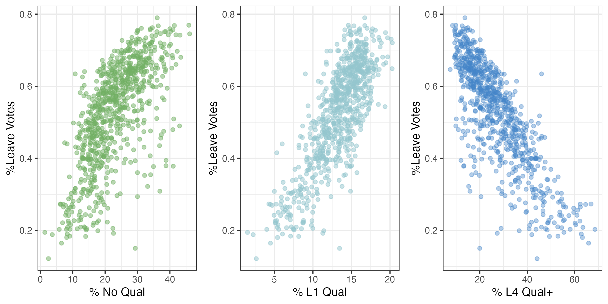
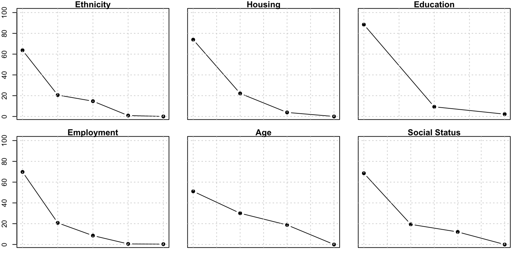
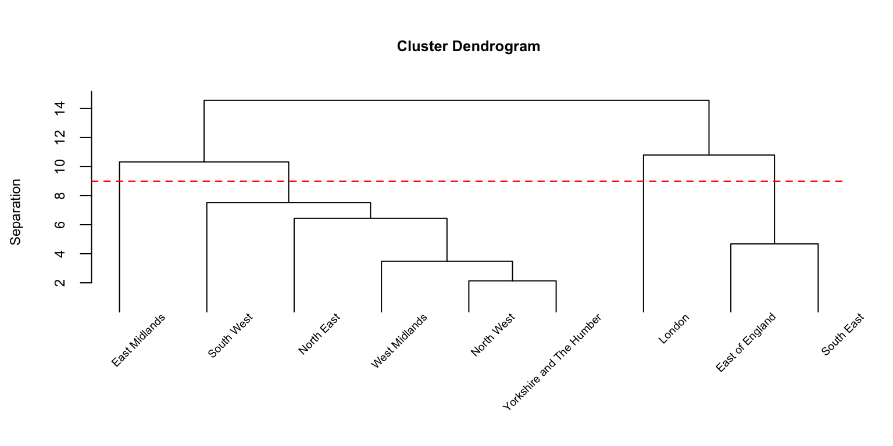

Predicting Brexit: A High-Dimensional Demographic Analysis
Introduction
The United Kingdom European Union membership referendum, commonly known as the Brexit referendum, was held on 23 June 2016. Voters were asked whether the United Kingdom should remain a member of the European Union or leave it. The result was a narrow victory for Leave, with 51.9% of votes cast in favor across the United Kingdom, and 53.4% across England. Understanding the factors influencing the Leave vote is pivotal for gaining insights into the political, economic, and social divisions within the UK.
In this project, we analyze data collected from individual wards to explore how demographic, social, and economic characteristics shaped voting outcomes across different regions in England. We aim to build an effective statistical model using data from the first 803 wards, where the voting outcomes are known, and then use this model to predict the outcomes of the remaining 267 wards.
The response variable is the proportion of Leave votes in each ward, calculated by dividing the number of Leave votes by the total number of votes cast. The dataset also contains a wide range of social, economic, and demographic features, comprising more than 40 explanatory variables. For clarity and structure, these variables are grouped into thematic categories based on their characteristics and relevance.
Geographic Information
This category includes AreaType and RegionName, which describe the structural and regional context of each ward. The geographical identity of a ward can influence political attitudes due to historical, cultural, and policy differences.
The attribute AreaType classifies wards into four categories according to the type of administrative area in which the ward is located: E06 (unitary authorities), E07 (non-metropolitan districts), E08 (metropolitan districts), and E09 (London boroughs). RegionName identifies the broader region, with values such as North East, North West, Yorkshire and The Humber, East Midlands, West Midlands, East of England, London, South East, and South West.
Wards in areas E06, E07, and E08 contain higher proportions of Leave votes, reaching around 60%, while E09 stands out with a majority supporting Remain. This reflects the urban–rural divide, as E09 corresponds to more urbanized regions. At the regional level, Yorkshire and The Humber has the highest proportion of Leave votes (around 60%), whereas East of England and London leaned more toward Remain, with London’s Leave share just over 40%. These patterns closely mirror the trends observed in AreaType, highlighting how geography shaped voting behavior.
Population and Demographics
This group encompasses Residents (number of permanent residents), Households (number of households), MeanAge (mean age of permanent residents), and AdultMeanAge (mean age of adults), along with a detailed breakdown of the population by age groups and ethnicity. These variables describe the size, composition, and diversity of the population, factors often linked to political preferences.
For ethnicity, the dataset provides proportions of several groups, including White, Black, Asian, Indian, and Pakistani populations. For age, data are provided across 16 detailed age bands. To simplify our model, we regrouped these into four broader categories:
- Minors: 0 - 17
- Young Voters: 18 - 29
- Working Age Adults: 30 - 64
- Retired Adults: 65+
By observing the scatterplots, we can explore how voting outcomes vary across demographic features. Both age and ethnicity variables show limited linear associations with the Leave vote proportion. Similarly, the variables Residents and Households exhibit very weak relationships. These findings suggest that the relationships between the demographic covariates and voting outcomes may be non-linear, motivating the use of more flexible modeling approaches in later stages.
Housing
The dataset contains four variables capturing the education levels of voters: Owned (percentage of households owning their accommodation), OwnedOutright, SocialRent (percentage of households renting from social landlords), and PrivateRent. These capture the housing tenure patterns within each ward. Housing status often reflects socioeconomic standing and long-term stability, which can influence voting behavior.
By plotting the variables against the response variables, the scatterplots suggest a weak negative linear association between PrivateRent and the proportion of Leave votes, indicating that areas with a higher proportion of households renting from private landlords tend to have slightly lower support for Leave. Other housing types, such as Owned and OwnedOutright, show no significant impact on the voting outcomes.
Education Level
This category contains four variables: NoQuals (percentage of permanent residents without academic or professional qualifications), L1Quals (percentage of permanent residents with Level 1 qualifications), L4Quals_plus (percentage of permanent residents with degree-level education or higher), and Students (percentage of permanent residents still in education). These indicators help describe the educational composition of each ward, a key factor often linked to political attitudes.
As shown in the scatterplots in Figure \(\ref{fig:scatterplot}\), there are noticeable trends between the education level of voters and the voting outcomes. The first two scatterplots demonstrate moderate positive relationships between the proportion of Leave votes and both NoQuals and L1Quals. Conversely, in the last scatterplot, the proportion of Leave votes declines as L4Quals_plus increases, suggesting that people with higher levels of educational background tend to favor Remain, while those with lower education levels are more inclined to support Leave.
Employment
The Employment category depicts the occupations and employment of voters via Unemp (percentage of permanent residents who are unemployed), UnempRate_EA (percentage of economically active residents who are unemployed), HigherOccup (percentage of permenant residents in “higher-level” occupations), and RoutineOccupOrLTU (percentage of permanent residents in “routine” occupations or who are long-term unemployed). Theese variables are potential factors influencing the political preferences of voters as they provide insights into economic stability and social class.
It could be observed from scatterplots that there is very little connection between the proportion of Leave votes and the unemployment rate. However, there exists a moderate negative relationship between the variable HigherOccup and the proportion of Leave votes, and a positive relationship between the variable RoutineOccupOrLTU and Leave votes. This may suggest that residents with higher-level occupations may tend to favor Remain whereas those have a “routine” occupations or who are long-term unemployed are more likely to vote Leave.
Socioeconomic Indicators
The indicators Density (Population Density), Deprived (percentage of households that are ‘deprived’ in at least one of four dimensions), and MultiDepriv summarize broader social and economic conditions. These indicators are important for understanding contextual hardship or privilege that may drive political discontent or support.
There is a moderate correlation between population density and Leave votes, suggesting that more densely populated areas tend to have a smaller proportion of Leave votes. However, the correlation between deprivation indicators and Leave votes is weak. This suggests that areas with higher deprivation levels do not necessarily show stronger Leave support.
Summary
Our exploratory analysis suggests that voting outcomes are influenced by a range of demographic, social, and economic factors. Education emerges as the strongest predictor, with higher Leave proportions linked to lower qualification levels and negatively correlated with higher education. Social grade is also important: areas with more lower-middle-class (C2) households show a strong positive association with Leave votes, while wealthier areas tend to prefer Remain. Moderate relationships are observed for housing type (especially private renting) and occupational status (particularly routine occupations and long-term unemployment). In contrast, age, ethnicity, and deprivation indicators show weaker relationships. These findings imply that linear models may not fully capture the complexity of these associations, and further investigation is needed. All of these covariates will be considered in building the final model.
Model Selection
Since we are modeling the proportion of Leave votes, it is important to select a model that accounts for the bounded nature of the data. Given that proportions lie between 0 and 1, logistic regression is ideal, as it models the log-odds of the outcome and ensures predictions remain within bounds.
As each vote can be considered a success or failure (Leave or Remain), we model the response as arising from a binomial process and therefore choose the binomial distribution as the family for our logistic regression.
Preliminary analysis suggests a parametric relationship between predictors and outcomes, motivating the use of a Generalized Linear Model (GLM). We therefore fit a binomial GLM with a logit link.
Data Preparation
Principal Component Analysis (PCA)
Previous exploratory analysis shows the dataset contains over 40 covariates grouped into categories like Education, Housing, Employment, and etc. Collinearity within these groups also needs to be addressed.
To reduce dimensionality and address multicollinearity, we apply Principal Component Analysis (PCA) within each covariate category (except socioeconomic indicators with only two factors). This allows us to extract the main dimensions of variation and retain most of the original information while reducing the number of predictors. We extract enough principal components to explain at least 70% of the total variance within each group. As shown in the scree plots in Figure \(\ref{fig:screeplots}\) in the appendix, we choose the first components for Housing, Education, and Employment (PC1_Housing, PC1_Education, and PC1_Employment), and the first two principal components for Ethnicity, Age and Social Status (PC1_Ethnicity, PC2_Ethnicity, PC1_Age, PC2_Age, PC1_SocialStatus, and PC2_SocialStatus).
These principal components will be included as covariates in the binomial GLM to provide a parsimonious yet informative model of voting behavior.
Clustering
To explore regional patterns and reduce data dimensionality, we perform hierarchical clustering based on the means of key covariates. After standardizing these means for each region, we compute pairwise distances and apply hierarchical clustering using the complete linkage method.
The resulting dendrogram in Figure \(\ref{fig:dendrogram}\) shows how regions separate based on their covariate profiles. By cutting the dendrogram at a height of 9 (marked by the red dashed line), we identify four clusters. Each region is assigned to a cluster, now recorded in the RegionCluster variable added to the dataset.
This clustering approach reveals regional similarities and differences and enables more focused analysis within each cluster.
Covariates
We have succcessfully reduced the dimensionality of our data by conducting multiple PCA and a clustering. The final covariates we are using for model building are: RegionCluster1, RegionCluster2, RegionCluster3, RegionCluster4, PC1_Ethnicity, PC2_Ethnicity, PC1_Housing, PC1_Education, PC1_Employment, PC1_Age, PC2_Age, PC1_SocialStatus, PC2_SocialStatus, and Density, MultiDepriv.
Generalized Linear Model (GLM)
Model Assumptions
Independence. The response variables are independently distributed.
Response Variable. The dispersion parameter estimate of 1 verifies the appropriateness of the binomial distribution assumption. It is also assume that there are linear relationships between the transformed expected response in terms of the link function and the explanatory variables, which can be verified by plotting the transformed response variables against the covariates in scatterplots.
Multicollinearity. As shown in the absolute correlation heatmap in Figure \(\ref{fig:corheatmap}\), correlations between covariates are generally within an acceptable range, with only a few groups—specifically Education, Employment, Social Grades, and Deprivation—exhibiting relatively high correlations. This is reasonable, as educational attainment can influence future employment opportunities and socioeconomic status. These findings are further supported by examining the Variance Inflation Factors (VIF) for each covariate, with most VIF values remaining below 10. However, owing to space limitations, the detailed VIF results are not presented here.
Errors. Errors are assumed to be independent but not necessarily normal.
Model Building
We choose the above mentioned covariates and link function to build the Generalized Linear Model: \[\text{logit}(P_i) = \log\left(\frac{P_i}{1-P_i}\right) = \beta^T \mathbf{x} + \epsilon_i,\]
where \(P_i\) stands for the proportion of Leave votes at each ward, \(\beta\) is the vector of coefficients, \(\epsilon_i\) is the random error, and \(\textbf{x}\) is the vector of a 1 (to capture the intercept) and the covariates as previously introduced in Section \(\ref{covariates}\): \(\mathbf{x} = \{1, x_1, x_2, \ldots\}^T\).
The model summary is presented in Table \(\ref{table:modelsummary}\): all covariates behave as we expected, with extremely small p-values, indicating that our selected covariates are statistically significant and likely contribute to explaining the variability in the response. Furthermore, the model produced an R-squared of 0.8531, indicating that 85.31% of the variations in the dependent variable can be explained our model. We further use more approaches to analyze and check our model.
Model Checking
- We analyzed the residuals from the training set (previous 803 wards with full information on Leave votes) to ensure there were no obvious patterns or deviations.
- Residual plots were inspected for randomness, supporting the assumption of correctly specified mean-variance relationship.
Predictions
We use our model to predict the proportion of Leave votes in the remaining 267 wards. The mean standard error associated with the prediction is 0.00084, with a minimum of 0.00038 and a maximum of 0.00323. Generally, the majority of predicted values are kept within a reasonable range. According to the model, the overall predicted proportion of Leave votes in England is 52.32%, across all 1070 wards in the dataset. This is considerably close to the actual referendum results in England - 53.4%.
Limitations and Enhancements
In the process of checking model assumptions, we observed that not all selected covariates exhibit a clear linear relationship with the link function transformed response variable, i.e. the logit of proportion of Leave votes. This issue warrants further examination.
Additionally, when examining the residuals from the training set predictions, we identified a few significant spikes in the residual plots. The model diagnostic plots further suggest that our model may have been influenced by some extreme values, suggesting further investigation. The model is also constrained by limited data. Previous studies show that economic factors such as GDP could have an impact on the result of the referendum.
Finally, interactions between covariates could also be further explored.
Appendix



| Estimate | Std. Error | z value | Pr(>|z|) | |
|---|---|---|---|---|
| (Intercept) | 1.0749940 | 0.0133656 | 80.429723 | 0 |
| RegionCluster2 | -0.1008282 | 0.0073477 | -13.722453 | 0 |
| RegionCluster3 | 0.1597308 | 0.0075777 | 21.078982 | 0 |
| RegionCluster4 | 0.0533320 | 0.0068069 | 7.834961 | 0 |
| PC1_Ethnicity | 0.0129114 | 0.0011512 | 11.215833 | 0 |
| PC2_Ethnicity | -0.0650479 | 0.0015344 | -42.394210 | 0 |
| PC1_Housing | -0.0528773 | 0.0017378 | -30.427799 | 0 |
| PC1_Education | 0.3179321 | 0.0029733 | 106.930228 | 0 |
| PC1_Employment | -0.0193578 | 0.0027772 | -6.970349 | 0 |
| PC1_Age | -0.0507903 | 0.0015851 | -32.042644 | 0 |
| PC2_Age | 0.0922570 | 0.0015332 | 60.172573 | 0 |
| PC1_SocialStatus | 0.1063456 | 0.0021597 | 49.240842 | 0 |
| PC2_SocialStatus | -0.0680723 | 0.0020486 | -33.228442 | 0 |
| Density | -0.0024351 | 0.0000478 | -50.951320 | 0 |
| MultiDepriv | -0.0351509 | 0.0004685 | -75.030827 | 0 |
Social Status
This final category includes
C1C2DE(percentage of households in ‘social grades’ C1,C2,D,E),C2DE, andDE, which represent segments of the UK’s social grade system. These grades demonstrate class and consumption patterns, correlating with voting behavior. Using these variables, we can obtain the proportion of households in each social grade by the following transformation:There is a moderate negative linear correlation between the proportion of households in social grades A and B and Leave votes, suggesting that richer areas tend to support Remain, yet no clear pattern is found for grades C1 and DE. In contrast, there is a strong positive correlation between Leave votes and the proportion of households in grade C2. These results suggest that wards with more upper-class residents tend to vote Remain, while areas with more lower-middle-class households are more likely to support Leave.